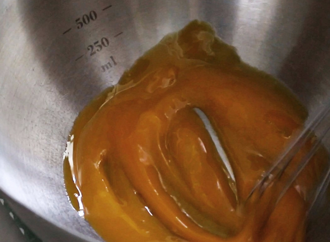
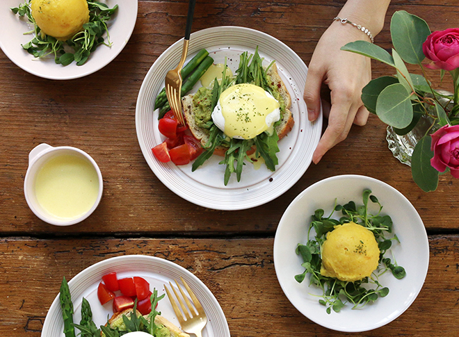

Cooking book
이달의 레시피

노른자를 톡터트려 먹는 뉴욕 브런치
에그베네딕트
에그베네딕트는 잉글리시머핀 위에 햄과 수란 등을 얹어 먹는 대표적인 뉴욕 스타일 브런치 메뉴에요. 뉴욕 맨해튼의 한 레스토랑에서 단골 손님인 베네딕트 부인이 새로운 달걀 요리를 주문하자 주방장이 그녀를 위해 이 요리를
처음 선보였다고 전해오지요. 널리 사랑받는 만큼 부재료나 소스를 달리한 다양한 에그베네딕트가 있답니다. 수란을 톡 터뜨려 주르륵 흘러내리는 노른자를 잉글리시머핀과 햄,
시금치에 촉촉하게 묻혀 한 입 넣으면 고소한 풍미가 입안 가득 퍼진답니다.
Time
30min
Level
★★☆
Serves
4
기본 재료
달걀 4개, 슬라이스햄 4장, 시금치 한줌, 토마토 1개, 잉글리쉬머핀 2개, 다진마늘 1작은술, 파슬리가루 약간, 후추 약간Related Item
-
아틀리에
원형종지
-

아틀리에
스몰찬기(13cm)
-

아틀리에
미듐 원형찬기(15cm)
Cooking Step
-
1. 시금치는 깨끗이 씻어 밑동을 자르고, 토마토는 링으로 슬라이스해 약간의 소금, 후추를 뿌려주세요. 팬에 올리브오일을 두른 후 다진마늘을 넣고, 향이 올라오면 시금치를 넣고 숨이 죽을때까지 살짝 볶다가 약간의 소금과 후추를 뿌려주세요.
-
2. 햄은 그릴팬 또는 팬에 살짝 구워서 준비해주세요.
-
3. 냄비에 식촛물재료를 넣고 살짝 끓어오르면 수저로 냄비 가장자리를 원모양으로 돌리면서 물중앙에 그릇에 깨어놓은 달걀을 넣어 2~3분정도 익혀 수란을 만들어주세요
-

4. 버터는 중탕으로 녹이거나 전자렌지에 40초 정도 녹여주세요. 볼에 달걀 노른자를 넣어 푼 후, 따뜻한 물이 있는 냄비 위에 볼을 얹고 녹인 버터를 조금씩 넣으면서 거품기로 섞어주세요. 레몬즙과 약간의 소금, 후추로 간을 해주세요 -

5. 잉글리쉬머핀을 반으로 잘라 빵스프레드를 바른 후, 시금치-토마토-햄-수란 순서로 얹어주세요 접시에 담고 소스를 얹은 후, 약간의 후추와 파슬리가루를 뿌려 마무리해 주세요.